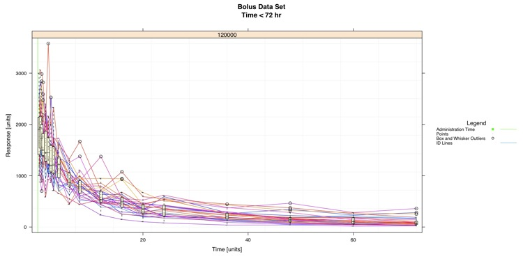

Example - Points, Lines, Administration Time, and Boxes

#pdf(file="F:/Website/boxplot/points-lines-admin.time-box-large.pdf", width = 15, height = 7.5)
### Import Data
data <- bolus
split.column <- "DOSE"
min.required <- 3
data <- data[data["DOSE"] == 120000 & data["TIME"] < 72,]
data.select <- data[ data$MDV == 0 & data$AMT == 0, ]
### Rows where MDV == 0 and AMT == 0 (Good Rows for plotting x,y)
data.to.plot <- list()
data.to.plot$x <- data.select[,"TIME"] #x
data.to.plot$y <- data.select[,"DV"] #y
data.to.plot$ids <- data.select[,"ID"] #ids
data.to.plot$amt <- data[data$AMT==data$DOSE,c("TIME","ID")]
data.to.plot$criteria <- data.select[,split.column]
x.min.lim <- 0
x.max.lim <- 72
y.min.lim <- 0
y.max.lim <- max(data.to.plot[["y"]])
data.to.plot$x.lim <- c(x.min.lim,x.max.lim)
data.to.plot$y.lim <- c(y.min.lim,y.max.lim)
bw <- FALSE
library(lattice)
### End Import
### Panel Function
function.of.panel <- function(
x,
y,
groups = groups,
data.to.plot.in.panel = data.to.plot,
min.required.in.panel = min.required,
black.and.white.in.panel = bw,
subscripts
){
cat("\n\n\nPacket", packet.number(),"\n")
### Grid
plot.grid(
x.divisions = 10,
y.divisions = 10,
grid.color = "grey95",
x.limits = data.to.plot.in.panel[["x.lim"]],
y.limits = data.to.plot.in.panel[["y.lim"]]
)
#### Administration Line
plot.administration.time(
data.for.amt = data.to.plot.in.panel,
ids = groups,
rows.being.used = subscripts,
black.and.white = black.and.white.in.panel
)
### Connect Points by ID
lines.by.id(
points.x = x,
points.y = y,
ids = groups,
rows.being.plotted = subscripts,
black.and.white = black.and.white.in.panel
)
### Box'n'Whisker
plot.box.and.whiskers(
points.x = x,
points.y = y,
minimum.required = min.required.in.panel,
black.and.white = black.and.white.in.panel
)
### Plot Points
plot.points(
points.x = x,
points.y = y,
points.symbol = 46,
points.size = 1,
points.color = "black"
)
}
### End Panel
### Make Box Plot
lat.box <- xyplot(
y ~ x | as.factor(criteria),
data = data.to.plot,
type = NULL,
aspect=.5,
# X is twice as long as Y
groups = ids,
xlab = "Time [units]",
ylab = "Response [units]",
xlim = c(x.min.lim - 0.03*(x.max.lim-x.min.lim)*0.5,x.max.lim + 0.03*(x.max.lim-x.min.lim)*0.5),
#0.5 is to compensate for the aspect ratio (aspect)
ylim = c(y.min.lim - 0.03*(y.max.lim-y.min.lim), y.max.lim + 0.03*(y.max.lim-y.min.lim)),
main = c("Bolus Data Set\nTime < 72 hr"),
panel = function.of.panel,
key = list(
title = "Legend",
text = list(
c("Administration Time","Points","Box and Whisker Outliers","ID Lines"),
col="black"
),
points = list(
col = c("green","black","black",rainbow(1,start=0.56,end=0.57)),
pch = c(15,46,1,NA),
cex = c(1)*0.75
),
lines = list(
col = c("green","white","white",rainbow(1,start=0.56,end=0.57)),
lwd = c(1,1,1,1)*0.75,
lty = c("solid","blank","blank","solid")
),
space = "right",
cex.title = 1,
cex = 0.75
)
)
### Change Color of Trellis Device and Plot Data
trellis.device(color = !bw,new = FALSE,retain = FALSE)
### Plot Data
print(lat.box)
#dev.off()
{kind=link}